Welcome to SongList
SongList is a browser-based chord chart app built for worship leaders. It reads SongBook Pro .sbp files and ChordPro .cho / .pro files and displays them as interactive chord charts — complete with transposing, capo controls, a full-screen performance mode, and auto-scroll. When you're ready to lead, share your entire set list with your worship team via a single link so everyone walks in with the same songs.
Everything lives in your browser; there is no account to create and no data is sent to any server.
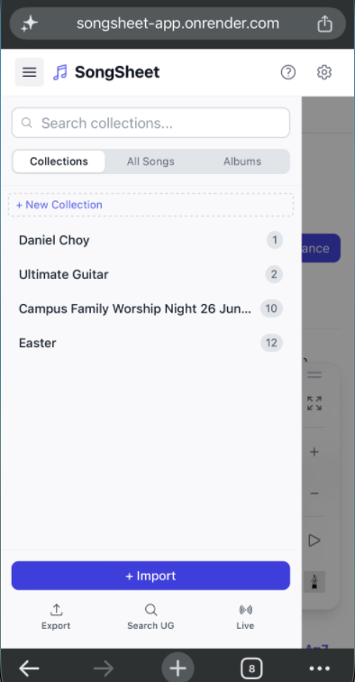
Interface Overview
- Top bar — App title on the left; the ⚙️ Settings button on the right. On mobile, a ☰ menu button opens the sidebar.
- Sidebar (left) — Your song library: search, collections, and import/export controls.
- Main area (right) — The active song's chord chart. Drag and drop song files here at any time.
Importing Your First Song
.sbp or .cho / .pro files directly onto the main content area to import them — no need to use the sidebar button.
The Song Library
The sidebar is your song library. It lists all imported songs and lets you organise them into collections.
Search
Type in the search bar at the top of the sidebar to filter songs by title or artist. The list updates instantly as you type. Clear the search field to return to the full library view.
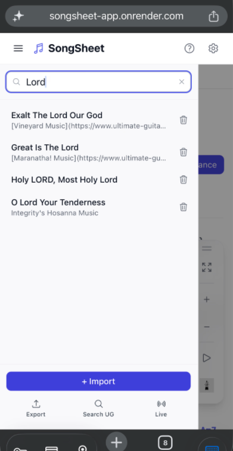
View Modes
When no search is active, a toggle beneath the search bar lets you switch between two views:
Collections
Collections are named groups of songs — useful for organising set lists by event, date, or genre.
- Create a collection — Click + New Collection in the Collections view, type a name, and press Enter (or click away to confirm). Press Esc to cancel.
- Add songs to a collection — Hover over a collection header and click the Add Songs button that appears. A modal will let you select songs from your library.
- Expand / collapse — Click a collection header to toggle its song list open or closed.
- Reorder songs — Expand a collection, then drag the ⠿ handle next to any song up or down to change its position. On mobile, press and hold the handle for a moment before dragging.
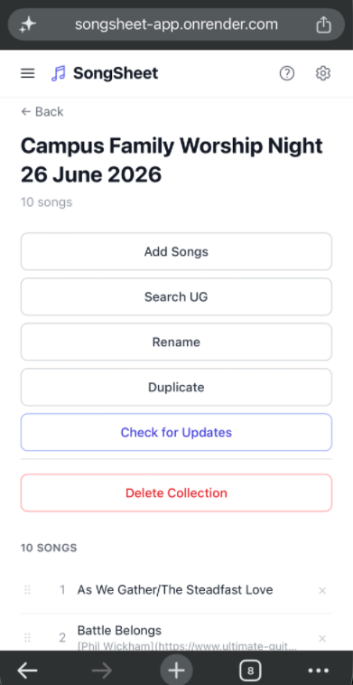
Importing Songs
Import Song Files
SongList supports two file formats:
- SongBook Pro —
.sbpand.sbpbackupfiles. Can contain multiple songs in one file. - ChordPro —
.cho,.chordpro,.chopro, and.profiles. One song per file; title, key, capo, tempo, and section markers ({start_of_verse},{start_of_chorus}, etc.) are all read automatically.
There are two ways to import:
- Import button — Click + Import at the bottom of the sidebar and choose one or more files in the file picker.
- Drag & Drop — Drag files from your computer and drop them anywhere on the main content area. The area highlights in blue when a drag is detected.
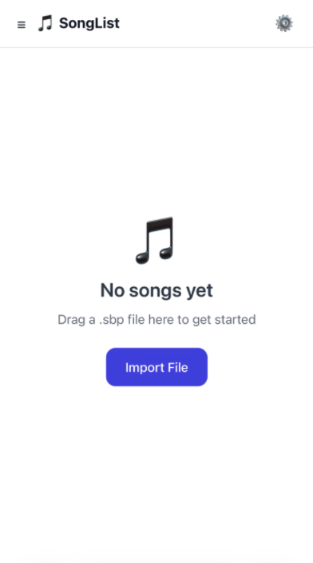
Handling Duplicates
If an imported song's title matches an existing song in your library, a dialog will appear with three options:
- Replace — Overwrites the existing song with the newly imported version.
- Keep Both — Adds the new song alongside the existing one as a separate entry.
- Skip — Ignores the duplicate and does not import it.
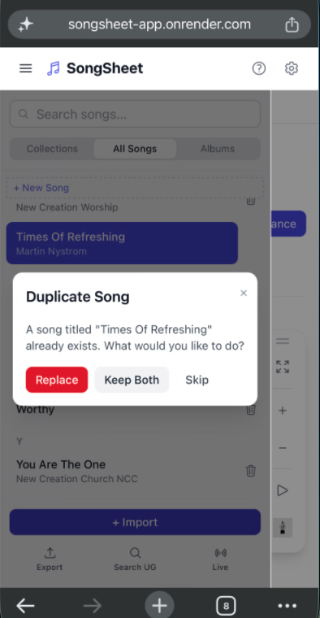
Search Ultimate Guitar
SongList can search Ultimate Guitar and import chord charts directly from the web. This feature requires a free Firecrawl API key.
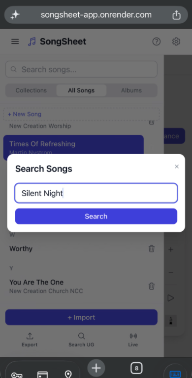
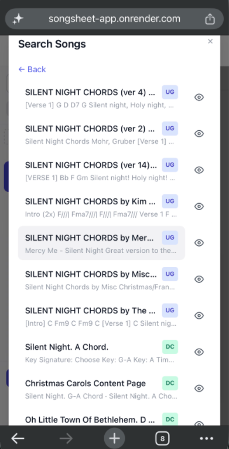
Viewing a Song
Click any song in the sidebar to open it in the main content area.
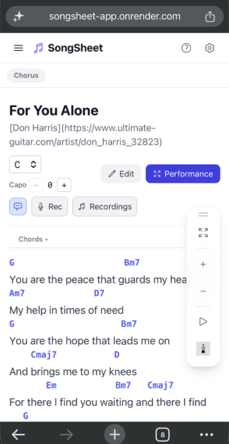
Song Header & Info Panel
The top of every song shows the title, artist, and a row of controls. If the song has tempo, time signature, CCLI number, or copyright data, an Info toggle link appears.
- Click Info ▼ to expand a grid showing BPM, time signature, CCLI, and copyright.
- Click Info ▲ to collapse it again.
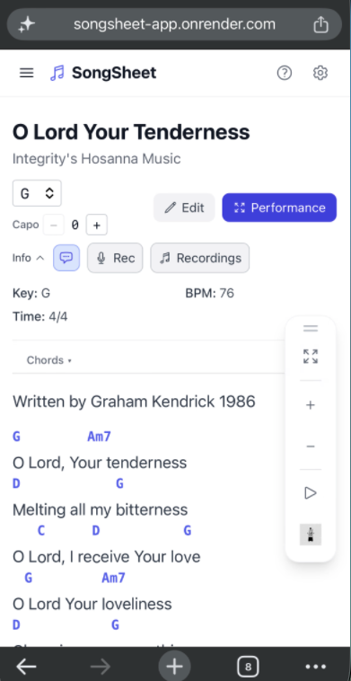
Chord Strip
Directly below the header is the chord strip — a horizontal bar of chord diagrams for every unique chord in the song. Diagrams show fingering positions on a fretboard.
- Click the Chords ▲ / ▼ toggle to show or hide the chord strip.
- The chord strip updates automatically when you transpose the song or adjust the capo.
- The chord strip is hidden in Lyrics Only mode.
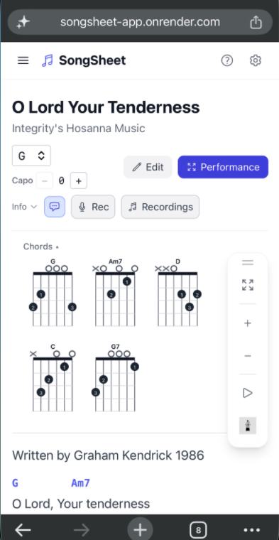
Font Size & Fit to Screen
A set of floating buttons appears in the bottom-right corner whenever a song is open.
- ⤢ (Fit to Screen) — Automatically scales the font size so the entire song fits within the visible screen height without scrolling. When active, the button turns indigo. Tap again to return to manual font sizing.
- + — Increase font size (up to 28 px). Disabled while Fit to Screen is on.
- − — Decrease font size (down to 12 px). Disabled while Fit to Screen is on.
Font size preference is saved across sessions.
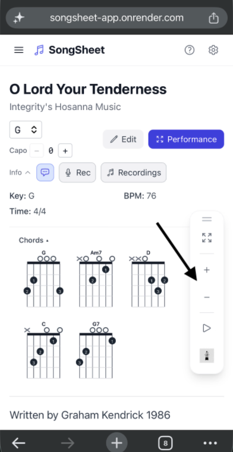
Lyrics Only Mode & PDF Download
Enabling Lyrics Only mode (in Settings) hides all chord annotations and the chord strip, showing just the song text. This is useful for singers or worship teams who don't need chords.
When Lyrics Only is active, a ↓ PDF button appears in the song header. Clicking it downloads a clean PDF of the song's lyrics for printing or sharing.
Transposing & Capo
SongList lets you change the displayed key of any song and set a capo fret, all without editing the original file.
Transpose
A key dropdown in the song header lists all 12 major (or minor) keys. Selecting a different key instantly transposes every chord in the song. The original key stored in the file is never modified — transpose is non-destructive.
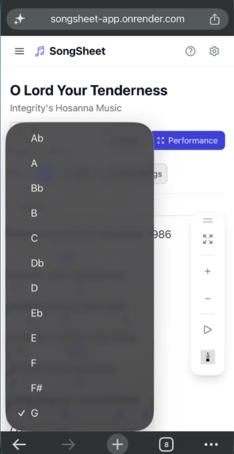
Capo
The Capo control (next to the key dropdown) shows the current capo fret. Use the + and − buttons to increase or decrease it (0 – 7).
- Setting a capo shifts the displayed chords so they reflect what you actually play with a capo fitted at that fret.
- Transpose and capo can be used together: e.g. set the key to G and capo 2 to play in A with open-G chord shapes.
Auto-Scroll
Auto-scroll slowly and smoothly scrolls the song content from top to bottom at a speed you control — useful when performing and you need both hands free.
Auto-scroll is available in both the standard song view and Performance Mode.
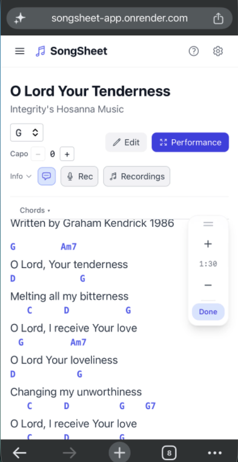
Controls
- ▶ Start — Tap the play button (bottom right) to begin scrolling.
- ⏹ Stop — Tap again to stop. The button turns indigo while scrolling is active.
- Speed + — Increases the target scroll duration by 5 seconds (slower scroll).
- Speed − — Decreases the target scroll duration by 5 seconds (faster scroll). Minimum is
0:30. - Duration display — Shows the current target scroll time (e.g.
1:30) between the speed buttons. Maximum is10:00.
Performance Mode
Performance Mode opens a full-screen overlay optimised for use on stage — large text, clean layout, and no sidebar distractions.
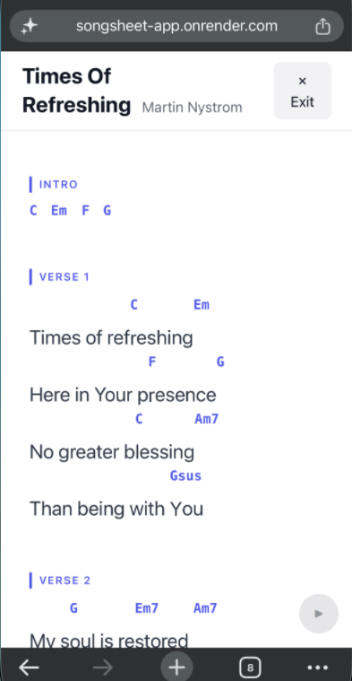
Keyboard Navigation in Performance Mode
| Key | Action |
|---|---|
↓ | Scroll to the next section |
↑ | Scroll to the previous section |
→ | Go to the next song |
← | Go to the previous song |
Esc | Exit Performance Mode |
Chord Strip
The chord strip is also shown in Performance Mode. Toggle it with the Chords ▲ / ▼ button to show or hide it as needed.
Auto-Scroll in Performance Mode
The same auto-scroll controls (▶ / ⏹, speed + / −) are available in Performance Mode. See Auto-Scroll for full details.
Editing a Song
Click the Edit button in the song header to open the built-in editor. The main content area switches to an edit view with metadata fields at the top and a raw-text content editor below.
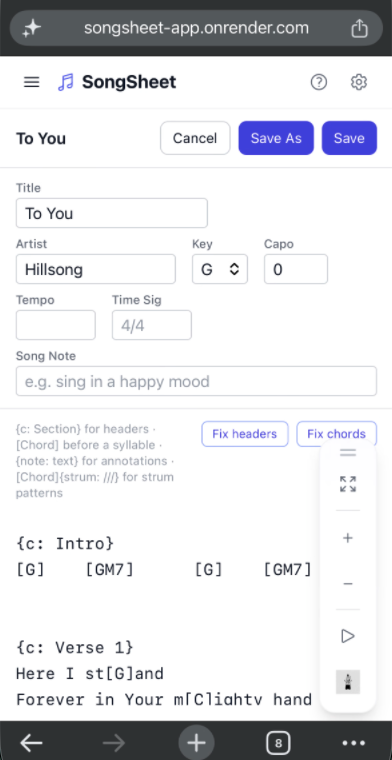
Metadata Fields
The metadata section lets you edit:
- Title and Artist
- Key — chromatic key index used for transposing
- Capo — default capo fret
- Tempo (BPM) and Time Signature
- CCLI number and Copyright
Content Syntax
Song content is plain text with two special markers:
{c: Verse 1}
# Chord before a syllable (no space between chord and word)
El Shad[Am]dai, El Shad[F]dai
# Chord-only line (instrumental)
[Dm] [G] [C]
{c: Section Name}— Creates a bold section header (e.g. Verse, Chorus, Bridge).[Chord]— Places a chord directly above the following syllable. Put it immediately before the syllable with no space.- A line containing only chord tokens separated by spaces is rendered as a purely instrumental chord line.
Saving and Cancelling
- Save — Commits your changes and returns to the song view.
- Cancel — Discards changes. If you've made edits, a confirmation prompt will appear before discarding.
Exporting Songs
Export lets you save or share selected songs. Start by entering Export Mode.
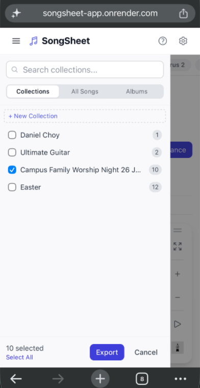
Download .sbp
Packages the selected songs into a single .sbp file and downloads it to your device. You'll be prompted to choose a filename before the download begins.
The resulting file can be re-imported into SongList or opened in SongBook Pro.
Presentation PDF
Generates a multi-page PDF of the selected songs, formatted for projection or printing. A background picker appears before the PDF is generated, letting you choose a solid colour, a gradient, or upload a custom image.
Settings
Open Settings by clicking the ⚙️ button in the top-right corner of the app. Press Esc to close.
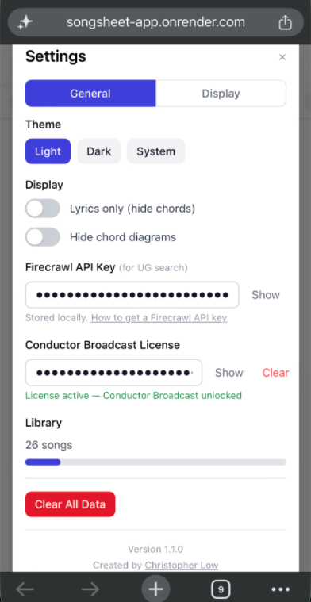
Theme
Choose between Light, Dark, and System. System follows your operating system's appearance preference.
Lyrics Only
Toggles Lyrics Only mode globally. When on, all chord annotations and the chord strip are hidden across every song. A ↓ PDF button appears in the song header for exporting lyrics.
Firecrawl API Key
Required to use the Search Ultimate Guitar feature. Paste your key here; it's stored locally in your browser and never sent to any SongList server. Use the Show / Hide button to reveal or mask the key.
Library Storage
Shows the number of songs in your library and a visual bar indicating how much of your browser's local storage is in use.
Clear All Data
Permanently deletes every song in your library. A confirmation prompt appears before anything is deleted. This cannot be undone.
.sbp file first if you want to keep them. See Download .sbp.
Live Session
A Live Session is a real-time shared workspace where a worship leader and their team can view and edit the same set list simultaneously — each person on their own device, no account required. The leader controls the set list; everyone else sees changes the moment they're made.
Common uses: finalising a set list during rehearsal with your band, letting a team member transpose a song for their instrument, or having a vocalist follow the same chord chart as the leader during a service.
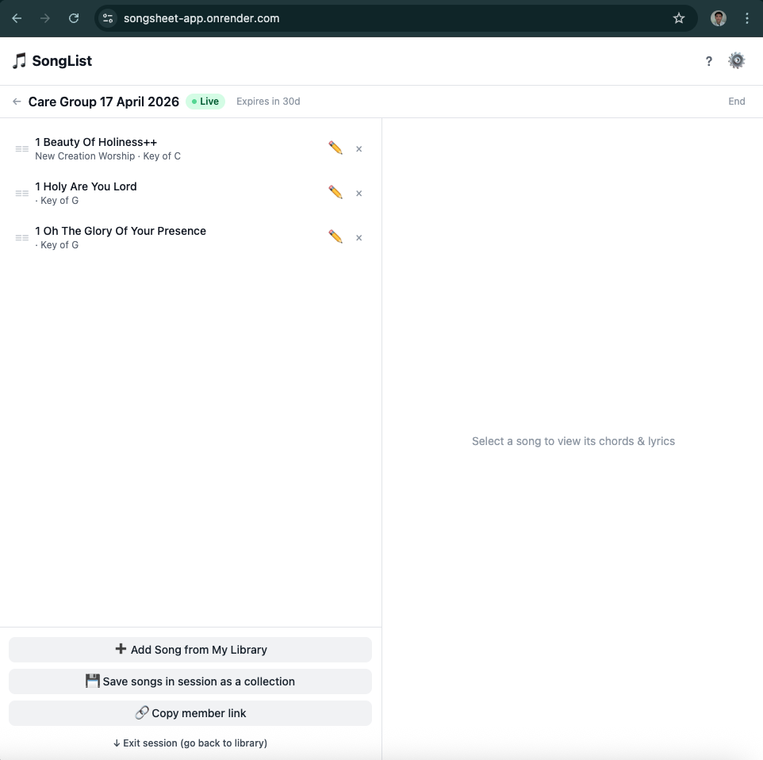
Starting a Session (Leader)
Click the 🎙 Live Session button at the bottom of the sidebar to open the Live Session modal.
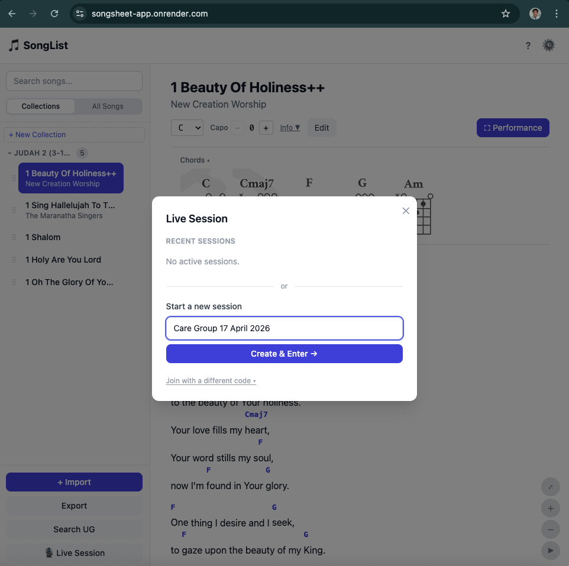
.sbp files (or search Ultimate Guitar) before starting.
The Session View
Once inside a session, the app switches to the Session View — a two-panel layout.
The header bar shows the session name and a pulsing green Live badge while connected. If the session is approaching expiry, a coloured countdown badge also appears.
Editing Songs in a Session
Any participant can edit a song's content directly within the session — useful for on-the-fly lyric corrections or chord adjustments during rehearsal.
If someone else is already editing a song, its ✏️ button is replaced by a 🔒 icon and a warning appears beneath the row. The lock is released automatically when they save or cancel.
Joining a Session (Member)
There are two ways to join a live session as a member:
Once joined, you see the same set list and can view any song, transpose for your own instrument, and edit songs (subject to edit locking). As a member you cannot reorder the set list or end the session.
Rejoining Recent Sessions
The Live Session modal tracks sessions you've previously joined or created. Each time you open the modal, it checks which of those sessions are still active and shows them under Recent Sessions. Tap any listed session to jump straight back in — as leader or member, depending on your original role.
Sessions that have already ended are removed from the list automatically. An amber or red Expires in Nd badge warns you when a session is approaching its expiry date (amber ≤ 7 days, red ≤ 3 days).
Ending a Session (Leader only)
When the session is over, click End in the top-right of the session header. If the set list contains songs that haven't been saved to your library yet, a confirmation modal appears with three choices:
- Save as collection & End session — Adds all songs in the set list to your personal library as a new collection named after the session, then closes the session for everyone.
- End without saving — Closes the session immediately. Songs edited or reordered during the session are not saved to your library.
- Cancel — Returns you to the session without ending it.
You can also save the set list without ending the session at any time by clicking 💾 Save songs in session as a collection in the session footer.
Tips & Keyboard Shortcuts
All Keyboard Shortcuts
| Key(s) | Context | Action |
|---|---|---|
→ |
Song view | Go to next song |
← |
Song view | Go to previous song |
→ |
Performance Mode | Go to next song |
← |
Performance Mode | Go to previous song |
↓ |
Performance Mode | Scroll to next section |
↑ |
Performance Mode | Scroll to previous section |
Esc |
Performance Mode | Exit Performance Mode |
Esc |
Settings | Close Settings panel |
Enter |
New Collection | Confirm collection name |
Esc |
New Collection | Cancel new collection |
Worship Leader Tips
- Build a set list collection for each service — Create a collection per Sunday (e.g. "Easter Sunday") and add your songs. Navigate through the set live with → / ← or a swipe.
- Share your set with the whole team — Use Export → Share via Link to send a single URL to your worship team, band, or congregation leaders. They tap the link, import the songs, and are ready to go — no app download required.
- Share lyrics only for singers and congregation — When sharing, toggle Share lyrics only so chord-free lyrics are what the recipient sees. Ideal for singers who don't need chord charts.
- Transpose on the fly for different vocalists — Transpose is non-destructive. If your lead singer needs a different key on the day, change it live without altering the stored song.
- Use Fit to Screen before leading — The ⤢ button scales the song to fill your screen so you can read it without scrolling, keeping your eyes up as much as possible.
- Dial in Auto-Scroll at rehearsal — Set the scroll speed for each song during the week so it flows naturally when you're leading.
- Generate a Presentation PDF for the projector team — The Presentation PDF export gives your visuals team a ready-to-use slide deck, styled with your chosen background.
- Export a backup .sbp before the service — Save your set list as a
.sbpfile in case you need to restore it quickly, especially at a venue with unreliable internet.